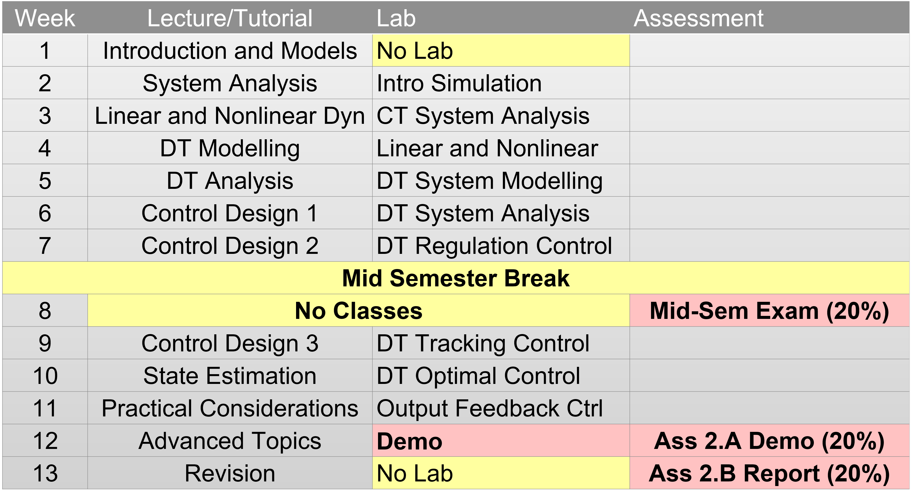
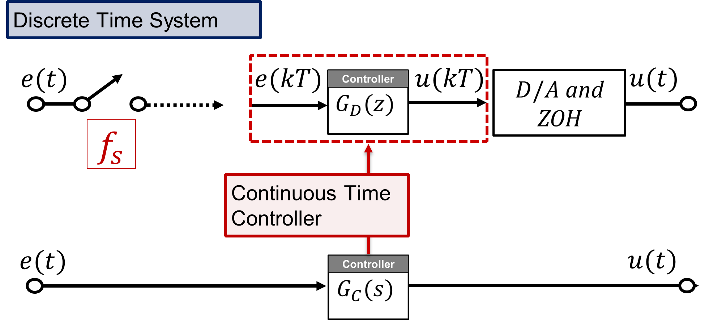
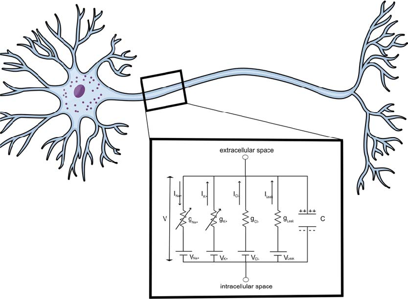

Title Slide

Modern Control
Week 11 Workshop
Dr Guilherme Froes Silva
School of Electrical Engineering & Robotics
Queensland University of Technology
EGH445 - Modern Control
Consultation: GP-S1111
Email: g.froessilva@qut.edu.au
Overview
- Student Voice Survey
- Lecture Highlights
- Workshop Example
Lecture Highlights (Week 11)

Practical Considerations: Lecture Content
Bridging the gap between ideal control theory and real-world implementation.
Overview
- State and output feedback control.
- LQR and Kalman filters tuning.
- Limitations of these ideal methods.
- Emulation design.
Practical Considerations: Key Topics
LQR Design in Practice
- Tuning Q and R:
- Starting points (diagonal matrices, Bryson’s Rule).
- Impact of Q/R ratio.
- Iterative tuning strategies.
- Limitations (model accuracy, constraint handling).
Kalman Filter (KF) Design in Practice
- Tuning Q and R:
- Starting points (datasheets, expected errors).
- Impact of Q/R ratio.
- Iterative tuning strategies.
- Residual error analysis for performance evaluation.
Emulation Design: Continuous to Digital Controllers
Emulating continuous controllers.
- Tustin (Bilinear) Transformation.
- Zero-Order Hold (ZOH) Equivalence.
- Matched Pole-Zero (MPZ) Method.
LQR Design in Practice
Find u(kT) = -Kx(kT) to minimise J = \sum_{k=0}^{\infty} \left( x(kT)^T Q x(kT) + u(kT)^T R u(kT) \right).
Starting Point:
Q = V^\intercal V = \text{diag}(q_i) and R = \text{diag}(r_j).
- q_i penalises state x_i deviation.
- r_j penalises control input u_j effort.
- \text{Obsv}(G, V) ensures all states influence J.
Iterative Tuning (Simulate & Observe):
- States x(kT) converge too slowly?
- Increase elements in Q (or decrease R).
- Control effort u(kT) too high/saturating?
- Increase elements in R (or decrease Q).
LQR Limitations to Remember
- Performance depends on an accurate linear model (G, H).
- Standard LQR does not handle constraints (e.g., actuator saturation u_{min} \le u(kT) \le u_{max}) explicitly. Simply saturating the LQR output can lead to issues.
- Model Predictive Control (MPC) is an alternative for systems with hard constraints.
Kalman Filter Design in Practice
Estimates states for linear systems with Gaussian noise: \begin{align*} x(kT+T) &= Gx(kT) + Hu(kT) + w(kT), \qquad y(kT) &= Cx(kT) + v(kT) \end{align*} where w(kT) \sim N(0, Q) is process noise and v(kT) \sim N(0, R) is measurement noise.
The Tuning Challenge:
- True Q and R are usually unknown.
- If Q/R is too small (trust model too much):
- Filter ignores measurements, estimates converge slowly, may drift if model is inaccurate.
- If Q/R is too large (trust measurements too much):
- Filter follows noisy measurements closely, estimates become noisy.
Tuning Strategies:
- Choosing R (Measurement Noise Covariance):
- R \in \mathbb{R}^{p \times p}. Often R = \text{diag}(\sigma_{v_i}^2).
- Sensor datasheets and/or experimental data.
- Choosing Q (Process Noise Covariance):
- Q \in \mathbb{R}^{n \times n} Often Q = \text{diag}(\sigma_{w_i}^2).
- \sigma_{w_i}^2 reflects expected deviation of x_i (physical intuition).
Assessment Focus (KF):
You are expected to know what it does, why/when it’s useful, and how to tune it (i.e., the role of Q, R), not the mathematical derivations.
Emulation Design – Continuous to Digital
Why Emulate?
- Use continuous control design techniques (e.g., PID, lead-lag).
- Sometimes easier to get intuition and design in the s-domain.
- Implement advanced continuous controllers digitally.
 Source: Lecture 11 Slides, EGH445.
- Emulation:
- Design G_c(s) for the continuous plant P(s).
- Discretise G_c(s) \rightarrow G_d(z).
- Implement G_d(z) to control P(s).
- Direct Design:
- Discretise plant P(s) \rightarrow P_d(z).
- Design G_d(z) directly for P_d(z).
Emulation Design – Discretisation Methods
How to convert G_c(s) into G_d(z)?
Tustin (Bilinear) Transformation
\small G_d(z) = G_c\left(\frac{2}{T} \frac{z-1}{z+1}\right).
Zero-Order Hold (ZOH)
\small G_d(z) = (1-z^{-1}) \mathcal{Z}\left\{\frac{G_c(s)}{s}\right\}.
Matched Pole-Zero (MPZ)
\small G_d(z) = K_d \frac{\prod (z - z_{z_j})}{\prod (z - z_{p_i})},
\small z_{p_i} = e^{s_{p_i} T}, \small z_{z_j} = e^{s_{z_j} T}.
Add zeros at z=-1.
K_d is adjusted to match DC gain.
Choosing a Method & Sampling Time T
The choice depends on the specific application, the characteristics of G_c(s), and the desired properties of G_d(z).
A sufficiently small T is crucial for all methods to ensure G_d(z) accurately approximates G_c(s).
Rule of thumb: sampling frequency 10-20 times faster than the fastest pole of G_c(s).
Workshop Example
Hodgkin-Huxley neuron model

\begin{align*} \dot V &= \frac{1}{C_m} - \frac{\bar g_k}{C_m} (V - V_k) - \frac{\bar g_{Na}}{C_m} m^3 h (V - V_{Na}) - \frac{\bar g_{l}}{C_m} (V - V_{l}) \\ \dot n &= \alpha_n(V) (1 - n) - \beta_n(V) n \\ \dot m &= \alpha_m(V) (1 - m) - \beta_m(V) m \\ \dot h &= \alpha_h(V) (1 - h) - \beta_h(V) h \end{align*}
where:
\begin{align*} \alpha_n(V) &= \frac{0.01 (10 - V)}{e^{(10 - V)/10} - 1} & \beta_n(V) &= 0.125 e^{-V/80} \\ \alpha_m(V) &= \frac{0.1 (25 - V)}{e^{(25 - V)/10} - 1} & \beta_m(V) &= 4 e^{-V/18} \\ \alpha_h(V) &= 0.07 e^{-V/20} & \beta_h(V) &= \frac{1}{e^{(30 - V)/10} + 1} \end{align*}